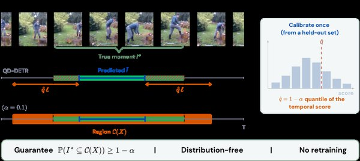

Conformal Coverage Guarantees for Any Video Temporal Grounder

In one sentence. COVER, a post-hoc, model-agnostic conformal wrapper that turns any video temporal grounder into one that outputs a region guaranteed to contain the true moment with a user-chosen probability.
Abstract
Event boundaries in continuous video are ambiguous: re-annotate the same query-video pair and independent annotators mark moments that overlap by less than half on a large fraction of samples. The ground truth for video temporal grounding is therefore a distribution over intervals, yet every grounder returns a single interval with no statement of reliability, so at deployment a wrong interval is indistinguishable from a right one. COVER changes the output object: a post-hoc, model-agnostic wrapper that turns any grounder, a trained localizer or a black-box video–language model, into one that emits a temporal region containing the true moment with probability at least 1-α, by calibrating the quantile of a temporal nonconformity score on held-out labels and widening the base prediction by that amount. The guarantee is finite-sample and distribution-free under exchangeability, and requires neither retraining nor white-box access. We give two score families, a two-sided boundary-widening score for grounders that emit an interval and a super-level-set score for grounders that emit a relevance signal, and develop theory specific to grounding that bounds how large the certified region becomes, when coverage survives conditioning on event length, and how it degrades when moments from one video break exchangeability. Across three benchmarks and five grounders, realized coverage tracks the target, and calibration exposes what point metrics hide.
This work was led by an undergraduate student in our lab whom I mentor; I contributed in an advisory role.
BibTeX
@article{mohamed2026conformal,
title = {Conformal Coverage Guarantees for Any Video Temporal Grounder},
author = {Mohamed, Aseel and Khanbayov, Rasul and Serpedin, Erchin and Kurban, Hasan},
journal = {arXiv preprint arXiv:2608.07434},
year = {2026}
}